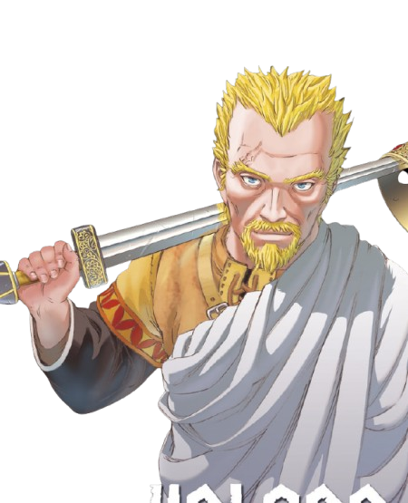
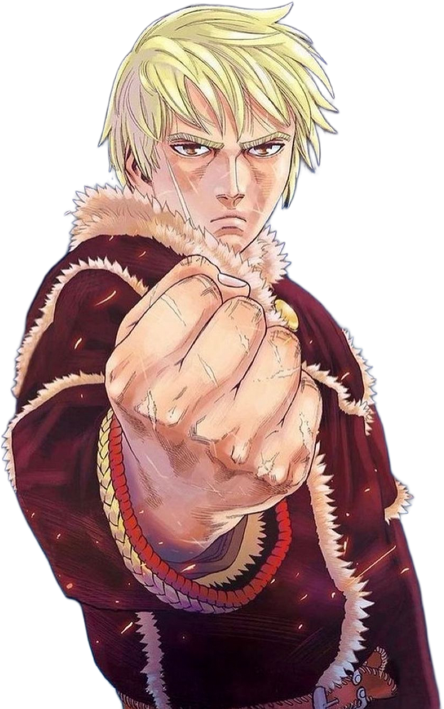

Vinland Saga é uma série de anime e mangá ambientada na época dos vikings, que segue a história de Thorfinn, um jovem guerreiro. Depois de ver seu pai, o famoso guerreiro Thors, ser assassinado por Askeladd, um mercenário astuto e cruel, Thorfinn busca vingança. Ao longo da trama, Thorfinn se envolve em conflitos violentos e complexos, lidando com temas como honra, vingança e redenção, enquanto presencia as duras realidades da guerra viking. A história também explora a ascensão do rei Canute e o destino de uma terra conhecida como Vinland, uma utopia prometida onde a paz pode finalmente ser alcançada.
Thorfinn é o protagonista de Vinland Saga, um jovem viking que busca vingança pela morte de seu pai, Thors. Ele se junta ao grupo de mercenários liderado por Askeladd, o responsável pela morte de seu pai. Ao longo da história, Thorfinn enfrenta dilemas morais, questionando o verdadeiro significado da vingança e da guerra, e busca um propósito além da violência.

Askeladd é um líder de mercenários vikingues , astuto e manipulador. Ele é um estrategista habilidoso, que usa sua inteligência para controlar e influenciar outros, incluindo Canuto e Thorfinn. Sua busca por poder e sobrevivência o torna uma figura ambígua, com uma visão pragmática sobre o mundo.
Canute é o príncipe da Dinamarca em Vinland Saga, inicialmente frágil e inseguro, mas que se transforma em um líder implacável. Sua jornada mostra sua evolução de um jovem vulnerável para um monarca determinado, focado em conquistar e manter o poder.
p>
No episódio 24 de Vinland Saga, intitulado "Father", Askeladd, o líder dos mercenários, enfrenta seu destino de maneira trágica. Em uma batalha decisiva, ele sacrifica sua vida para garantir o futuro do príncipe Canuto, que se prepara para assumir o trono da Dinamarca. Askeladd, com sua astúcia e estratégia, manipula os eventos para garantir a ascensão de Canuto, mesmo sabendo que isso o levaria à morte. Em um momento de grande tensão, Thorfinn, que busca vingança pela morte de seu pai, finalmente enfrenta Askeladd, culminando em uma luta emocional e intensa. A morte de Askeladd não apenas altera o curso da política dinamarquesa, mas também marca uma virada no desenvolvimento de Thorfinn, que é forçado a confrontar suas próprias motivações e o verdadeiro significado da vingança.
No episódio 16 de Vinland Saga, intitulado "The Light of Dawn", Thorfinn enfrenta um dos maiores desafios de sua jornada ao lutar contra Thorkell, o Grande, um lendário guerreiro viking. Durante uma batalha pelo controle de uma fortaleza, Thorkell e suas forças se deparam com Thorfinn e os mercenários de Askeladd. O episódio destaca a intensidade do combate entre os dois, com Thorkell demonstrando uma força imensa e respeito pela habilidade de Thorfinn. Embora Thorfinn busque vingança, o combate é interrompido e não resulta em uma vitória clara, mas serve como um marco importante no desenvolvimento do jovem guerreiro, que começa a ser reconhecido por sua coragem e habilidade em batalha.
No episódio 3 de Vinland Saga, intitulado "A Fool's Inheritance", a paz de Thors, o pai de Thorfinn, é brutalmente interrompida quando ele é forçado a enfrentar Askeladd e seus mercenários. Thors, um ex-guerreiro viking, havia abandonado a vida de combate para viver em paz com sua família, mas é atacado por Askeladd, que busca vingança contra ele. Em uma luta épica, Thors demonstra sua incrível habilidade e força, mas, apesar de sua superioridade, ele acaba sendo traído e morto por Askeladd, que usa um truque para garantir sua vitória. A morte de Thors marca o início da jornada de vingança de Thorfinn, que jurou matar Askeladd em troca da perda de seu pai.

Thorfinn é o protagonista central de Vinland Saga, um jovem viking que busca vingança contra Askeladd, o homem responsável pela morte de seu pai, Thors. Motivado pela raiva e desejo de justiça, ele se junta ao grupo de mercenários de Askeladd. Ao longo do tempo, se envolve em diversas batalhas e conflitos, enquanto começa a questionar o verdadeiro propósito de sua jornada.
A história de Thorfinn se entrelaça com eventos históricos, como as invasões vikings e a ascensão do rei Canuto, o que faz dele uma figura central na obra. A evolução do personagem reflete temas profundos sobre honra, guerra e a complexidade da natureza humana, mostrando o impacto das escolhas e as consequências de viver uma vida marcada pela violência.
Um aspecto importante de Thorfinn é sua busca por redenção. À medida que cresce, ele começa a questionar o significado de suas ações e a verdadeira razão de sua luta. Após a morte de Askeladd e outros eventos cruciais, Thorfinn começa a rejeitar a guerra e a violência, buscando encontrar um novo propósito de vida, o que o leva a se interessar por Vinland — uma terra prometida onde ele espera encontrar paz e construir uma vida melhor, longe dos conflitos e da vingança.
Askeladd é um dos personagens centrais de Vinland Saga e líder de um grupo de mercenários vikingues. Ele é um estrategista habilidoso, astuto e manipulador, sempre um passo à frente. Embora cruel e calculista, seu papel na história é vital, pois, além de ser um antagonista importante, ele também molda o desenvolvimento de Thorfinn, o protagonista, com quem mantém uma relação complexa de mentor e inimigo.
A relação entre Askeladd e Thorfinn é marcada pela vingança e manipulação. Thorfinn, buscando vingança pela morte de seu pai, Thors, se junta ao grupo de Askeladd sem saber que o líder tem seus próprios objetivos políticos. Apesar de usar Thorfinn como ferramenta, Askeladd o desafia constantemente, forçando-o a crescer como guerreiro e refletir sobre suas ações.
Askeladd tem uma herança mista, sendo metade viking e metade galês, o que influencia suas atitudes e decisões. Ele vê o poder como essencial para a sobrevivência e sua lealdade ao reino dinamarquês molda suas ações ao longo da história, fazendo dele uma figura pragmática e ambígua, sempre focada em seus próprios interesses.
Canuto é um personagem central de Vinland Saga, inicialmente um príncipe frágil e inseguro, que ao longo da obra passa por uma grande transformação. Filho do rei Sweyn Forkbeard, ele começa como uma figura fraca, mas gradualmente se torna um líder determinado e implacável. Sua jornada envolve lutar por seu direito ao trono e se consolidar como rei da Dinamarca, superando suas inseguranças.
Sua relação com Askeladd é crucial para seu desenvolvimento. Embora Askeladd inicialmente manipule Canuto para seus próprios objetivos, o príncipe começa a aprender com ele e, aos poucos, se torna mais estratégico e calculista. Isso o ajuda a entender as complexidades do poder e a amadurecer como líder, tomando decisões políticas mais firmes.
Canuto evolui de um príncipe vulnerável para um monarca autoritário, enfrentando os desafios da liderança com um lado mais sombrio e ambicioso. Sua busca pelo poder coloca-o em conflito com outros personagens, incluindo Thorfinn, e mostra sua crescente firmeza ao governar.


-Photoroom.png)